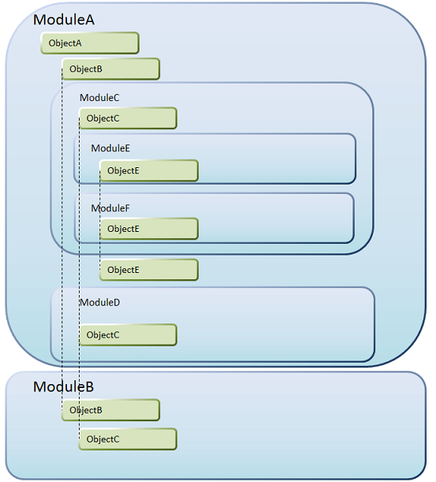

When writing code you may reference an object without fully qualifying it (i.e type its name but not the full Module path it is in). How references to partially qualified objects are resolved is called Automatic qualification rules. Automatic qualification rulesAutomatic qualification rules apply to partially qualified object names references in, for example, a referencing object source code. That is, the rules that GeneXus follows to identify, for example, what ObjectB (see picture below) you are talking about if you do not fully qualify it. The basic concept behind automatic qualification is to free developers working in a Module from having to be aware of other Modules in a Knowledge Base unless they have to (i.e. they have to interact with other Modules). To achieve the above objective, automatic qualification takes into account where the unqualified references are made, meaning that it does not solve in the same way a reference made to ObjectC from ModuleA.ObjectE and from ModuleB.ObjectB, for example (see picture below). Modules are organized in a tree structure. Every Module has a “parent” Module (except the Root module) and may also have “children” Modules. A “Module branch” is the set of Modules comprised by any given Module and its ancestors. A “Module tree” is the set of Modules comprised by any given Module and its successors. It is important to remember these concepts as they are used to explain how automatic qualification works.  Vertical lines are intended for helping you identify duplicated names. Automatic qualification algorithm works as follows.
Note1: if two objects are found and no other object with the same partially qualified name exists, the call is ambiguous and the algorithm stops displaying an error. Then the developer must qualify the object in order to break the ambiguity. This can be explained using the following rules which are explained later:
Referenced object name is unique in a referencing object container Module treeThe rule may sound pretty complex to read but, with a few examples, it is easy to understand. Example 1Say you are referencing ObjectA from any other object in any Module. As there is no other object named ObjectA in the Knowledge Base (the root module), the reference will be automatically qualified as ModuleA.ObjectA. Example 2Unqualified references to ObjectB from objects in ModuleA, ModuleC, ModuleD, ModuleE and ModuleF are automatically qualified as ModuleA.ObjectB. ObjectB is unique in ModuleA's Module tree that is a container module of any of the mentioned modules. Example 3There are two objects named ObjectC in ModuleA's Module tree but only one in either ModuleC, ModuleD and ModuleB. Unqualified references to ObjectC from objects in any of the last named Modules will be automatically qualified to ModuleC.ObjectC, ModuleD.ObjectC and ModuleB.ObjectC. Referenced object name exists in the referencing object container Module branchWhen the referenced object name is not unique in a referencing object container Module tree, but there is an object with the same name (the referenced object) in the referencing object container Module branch, the unqualified reference is resolved for that object. Let's take a look at a few examples that will make things clearer. Example 1Say you are referencing ObjectE from an object in Module ModuleC. The name ObjectE is _not_ unique in any of ModuleC's container Module trees. There is, however, one object named ObjectE in ModuleC branch. The reference is qualified as ModuleC.ObjectE. Ambiguous callsIn some cases, the Automatic qualification rules cannot solve partially qualified object names references. In those cases the following error is displayed:
error: '{ObjectQualifiedName}' is ambiguous, there are more than one object with this name. Use the full qualified name to resolve the ambiguity.
Conflicting objects: {ObjectType_1} '{FullyQualifiedName_1}', {ObjectType_2} '{FullyQualifiedName_2}', ...[{ObjectType_N} '{FullyQualifiedName_N}']
Example 1 If a call to ObjectH is made from ObjectG—see image above, the call cannot be resolved automatically and the following error will be diplayed: error: 'ObjectH' is ambiguous, there are more than one object with this name. Use the full qualified name to resolve the ambiguity. Conflicting objects: Web Panel 'ModuleG.ModuleH.ObjectH', Web Panel 'ModuleG.ModuleI.ObjectH' (ModuleG.ObjectG Events, Line: Y, Char: XXX) |
| Backlinks | ||
| Toc:Modules | ||
| Modules - Grammar | Modules - Object names | Which objects can be defined in a module? |
| Working with Modules |